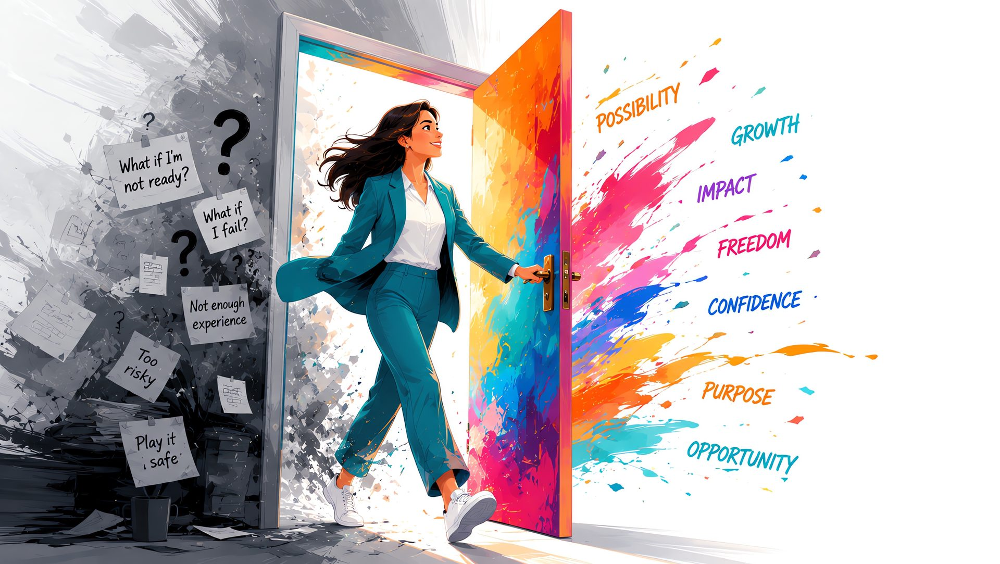
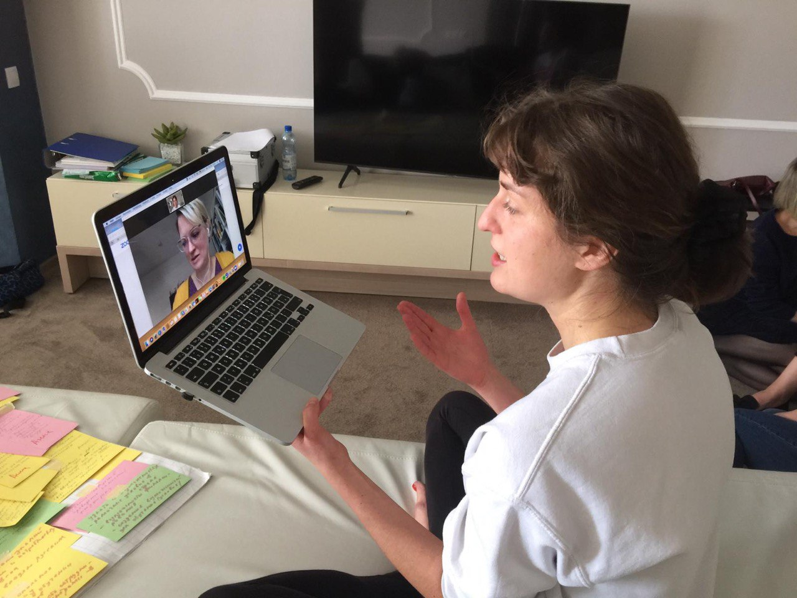
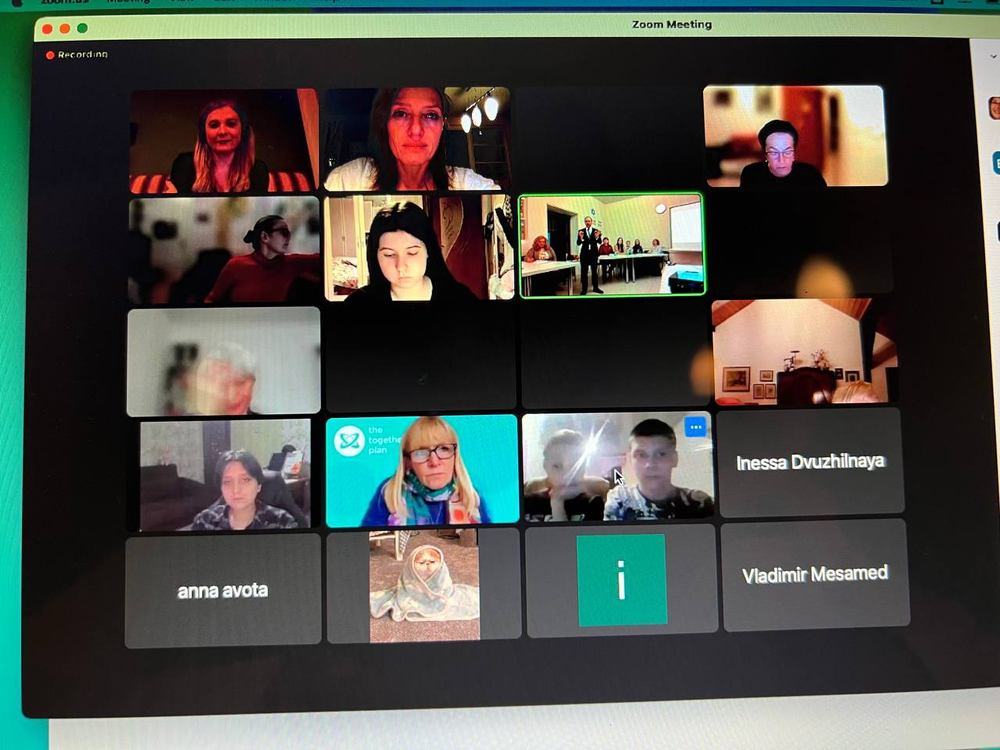
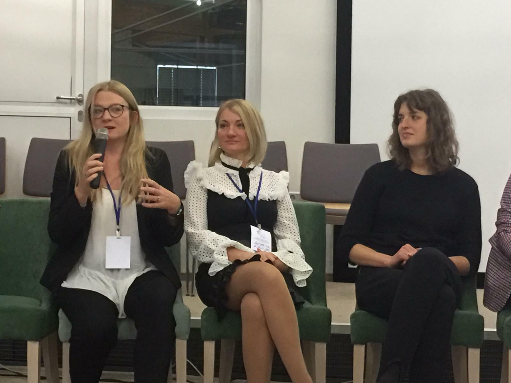
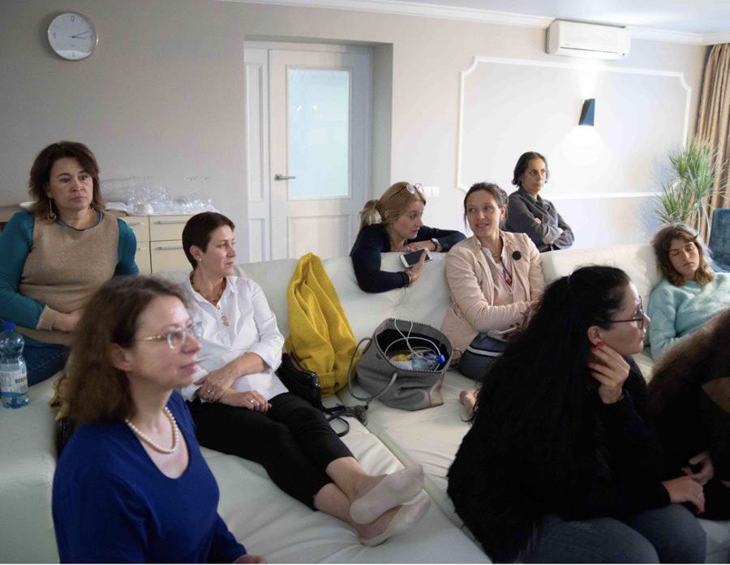
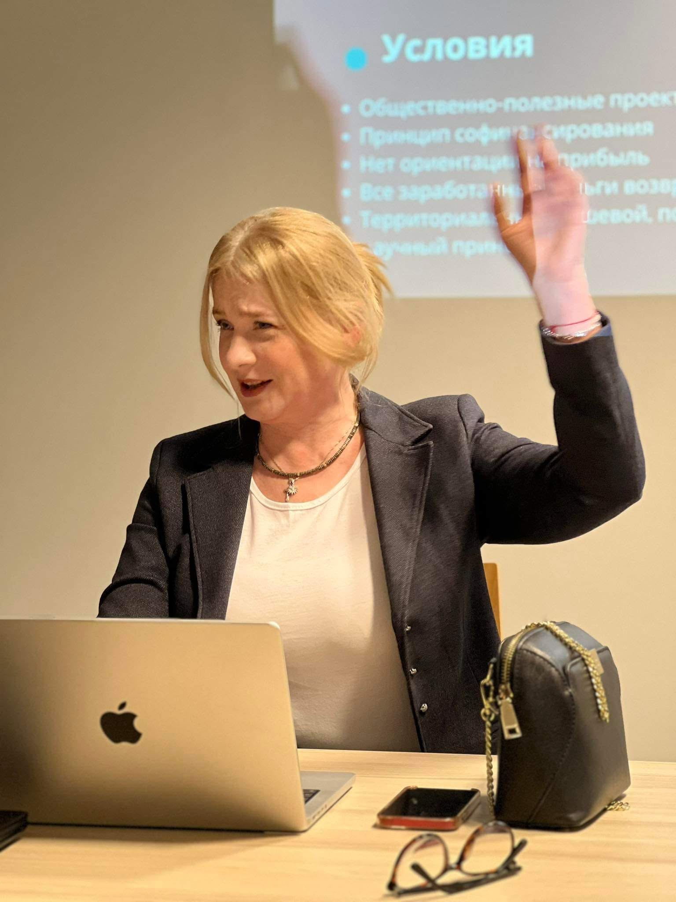
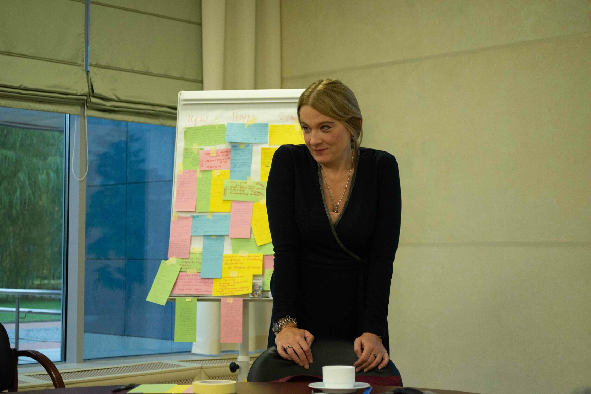

Самозанятость в Германии по шагам: от хаоса к ясному плану Selbstständigkeit in Deutschland Schritt für Schritt: vom Chaos zum klaren Plan
«Тренинг по самозанятости: теперь мне всё ясно!»„Das Training zur Selbstständigkeit: Jetzt ist mir alles klar!"
Меня зовут Анна Леоненко. Я автор тренинга «Самозанятость в Германии по шагам: от хаоса к ясному плану», консультант по самозанятости, карьерный коуч и разработчик образовательных программ для русскоязычных людей в Германии. За последние шесть лет я разработала и провела программы, лекции и воркшопы по открытию самозанятости, бизнес-планированию, правовым аспектам работы в Германии, бухгалтерии и налоговой системе, видам на жительство, совмещению разных видов занятости, поиску финансирования для некоммерческих проектов и бизнеса.
На консультации ко мне приходили очень разные люди. Певицы, актрисы и творческие команды, которые хотели основать Verein и при этом не переругаться ещё до первого проекта. Молодые ребята с уже живым бизнесом вокруг техно-вечеринок, которым срочно нужно было поставить на рельсы регистрацию, GbR, счета, налоги и бухгалтерию. Люди с работающим бизнесом, которым бизнес-план был нужен не «для красоты», а для перехода с §24 на §21 — и в итоге помог не только с видом на жительство, но и с самой структурой бизнеса. Приходили арт-терапевты, учителя музыки, beauty-специалисты, консультанты, коучи, программисты, видеографы, люди с первыми клиентами и люди, которые только пытались понять: «А можно ли мне вообще в Германии работать на себя?»
Ситуации разные, а внутренний вопрос часто один и тот же:
«Я хочу двигаться, но как сделать это правильно?»
Информации вокруг много. В какой-то момент стало понятно: вопросы повторяются. Людям нужен не ещё один набор ссылок, а маршрутная карта.
Так появился этот тренинг — из моего личного предпринимательского опыта, клиентских кейсов, образовательных материалов, методик и практических разборов.
Мы начинаем 6 августа. Формат простой: каждую неделю одно групповое занятие, домашние задания и один мастермайнд, где мы вместе разбираем вопросы, задания и реальные ситуации, поддерживаем и мотивируем друг друга. Можно просто купить материалы и начинать самостоятельный путь прямо сейчас, а можно полностью уйти в индивидуалку и работать по своему плану.
Во время тренинга мы не собираем ещё больше информации — её у вас и так уже предостаточно: чаты, советы знакомых, ответы ChatGPT, немецкие сайты, истории «у меня было вот так». Но от этого изобилия тревога только усиливается, голова идёт кругом. На тренинге мы структурируем и раскладываем по порядку то, что накопилось: идея, клиенты, деньги, регистрация, налоги, бухгалтерия, документы и следующие шаги. Каждую тему вы сразу применяете к себе и своему делу — прямо по ходу тренинга.
Результат — не хаос противоречивых советов из чатов, интернета и ИИ, а понятная личная стратегия. А у самых активных — реальные шаги: цены, офер, клиенты, порядок в счетах, документах и контрактах. Ich habe dieses Training aus den echten Fragen meiner Klientinnen und Klienten aufgebaut
Mein Name ist Anna Leonenko. Ich bin Autorin des Trainings «Selbstständigkeit in Deutschland Schritt für Schritt: vom Chaos zum klaren Plan», Beraterin für Selbstständigkeit, Karriere-Coach und Entwicklerin von Bildungsprogrammen für russischsprachige Menschen in Deutschland. In den letzten sechs Jahren habe ich Programme, Vorträge und Workshops entwickelt und durchgeführt — zu Existenzgründung, Businessplanung, den rechtlichen Aspekten des Arbeitens in Deutschland, Buchhaltung und Steuersystem, Aufenthaltstiteln, der Verbindung mehrerer Tätigkeiten sowie der Fördermittel-Akquise für gemeinnützige Projekte und Unternehmen.
In die Beratung kamen sehr unterschiedliche Menschen. Sängerinnen, Schauspielerinnen und kreative Teams, die einen Verein gründen wollten, ohne sich schon vor dem ersten Projekt zu zerstreiten. Junge Leute mit einem bereits lebendigen Business rund um Techno-Partys, die dringend Anmeldung, GbR, Konten, Steuern und Buchhaltung auf die Schiene bringen mussten. Menschen mit einem laufenden Business, die einen Businessplan nicht «zur Zierde» brauchten, sondern für den Wechsel von §24 zu §21 — was am Ende nicht nur beim Aufenthaltstitel half, sondern auch bei der Struktur des Unternehmens selbst. Es kamen Kunsttherapeutinnen, Musiklehrer:innen, Beauty-Spezialistinnen, Berater:innen, Coaches, Programmierer:innen, Videograf:innen, Menschen mit den ersten Kund:innen und Menschen, die gerade erst herausfinden wollten: «Darf ich in Deutschland überhaupt für mich selbst arbeiten?»
Die Situationen sind verschieden, aber die innere Frage ist oft ein und dieselbe:
«Ich will vorankommen — aber wie mache ich es richtig?»
Informationen gibt es rundherum genug. Irgendwann wurde klar: Die Fragen wiederholen sich. Die Menschen brauchen nicht noch eine weitere Sammlung von Links, sondern eine Landkarte.
So ist dieses Training entstanden — aus meiner eigenen unternehmerischen Erfahrung, aus Klientenfällen, Bildungsmaterialien, Methoden und praktischen Analysen.
Wir beginnen am 6. August. Das Format ist einfach: jede Woche ein Gruppentreffen, Hausaufgaben und ein Mastermind, in dem wir gemeinsam Fragen, Aufgaben und echte Situationen besprechen, uns gegenseitig unterstützen und motivieren. Man kann auch einfach die Materialien kaufen und sofort den eigenen Weg beginnen, oder ganz auf ein Einzelformat setzen und nach dem eigenen Plan arbeiten.
Im Training sammeln wir nicht noch mehr Informationen — davon haben Sie längst mehr als genug: Chats, Ratschläge von Bekannten, Antworten von ChatGPT, deutsche Websites, Geschichten nach dem Motto «bei mir war das so». Doch diese Fülle verstärkt nur die Unruhe, und der Kopf dreht sich. Im Training strukturieren und ordnen wir, was sich angesammelt hat: Idee, Kundschaft, Geld, Anmeldung, Steuern, Buchhaltung, Unterlagen und die nächsten Schritte. Jedes Thema wenden Sie sofort auf sich und Ihr Vorhaben an — direkt während des Trainings.
Das Ergebnis ist kein Chaos widersprüchlicher Ratschläge aus Chats, Internet und KI, sondern eine klare persönliche Strategie. Und die Aktivsten machen echte Schritte: Preise, Angebot, Kund:innen, Ordnung in Rechnungen, Unterlagen und Verträgen.
Узнаёте себя?Erkennen Sie sich wieder?
Люди приходят на тренинг с очень разными вопросами. Найдите ситуацию, которая ближе всего к вашей — и посмотрите, что даст вам тренинг.Menschen kommen mit sehr unterschiedlichen Fragen ins Training. Finden Sie die Situation, die Ihrer am nächsten kommt — und sehen Sie, was das Training Ihnen bringt.
Маша несколько месяцев читает Telegram-чаты, гуглит и проверяет всё в ChatGPT. У неё уже десятки заметок, советов знакомых и скриншотов — но они часто противоречат друг другу. Идея бизнеса у неё уже есть, проблема не в выборе, а в том, что вся собранная информация не складывается в картину: что из этого относится конкретно к её ситуации, а что нет.Mascha liest seit Monaten Telegram-Chats, googelt und prüft alles in ChatGPT. Sie hat Dutzende Notizen, Tipps von Bekannten und Screenshots — doch die widersprechen sich oft. Eine Geschäftsidee hat sie bereits; das Problem ist nicht die Wahl, sondern dass sich all die Informationen nicht zu einem Bild fügen: Was davon betrifft genau ihre Situation und was nicht?
У Карины не одна идея, а сразу несколько направлений: что-то про мероприятия, что-то про консультации, ещё подработка как репетитор. Она не знает, что выбрать, можно ли всё это совместить или нужно сосредоточиться на чём-то одном.Karina hat nicht eine Idee, sondern gleich mehrere Richtungen: etwas mit Events, etwas mit Beratung, dazu ein Nebenjob als Nachhilfelehrerin. Sie weiß nicht, was sie wählen soll, ob sich alles verbinden lässt oder ob sie sich auf eine Sache konzentrieren muss.
Ольга получает Bürgergeld и боится, что регистрация самозанятости испортит отношения с Jobcenter или она вообще потеряет пособие. Она не понимает: что можно делать параллельно с пособием, какие взносы и формальности её ждут, не говоря уже о субсидии на открытие бизнеса.Olga bezieht Bürgergeld und fürchtet, dass die Anmeldung einer Selbstständigkeit das Verhältnis zum Jobcenter belastet oder sie die Leistung ganz verliert. Ihr ist unklar: Was darf sie parallel zum Bürgergeld tun, welche Beiträge und Formalitäten kommen auf sie zu — von Gründungszuschüssen ganz zu schweigen.
Виктор хочет поменять визу с §24 на §21 (самозанятость) и хочет сделать это заранее, «подстелить соломку». Для смены статуса нужен бизнес-план, который пройдёт проверку в IHK.Viktor möchte sein Visum von §24 auf §21 (Selbstständigkeit) umstellen und das rechtzeitig vorbereiten, um auf der sicheren Seite zu sein. Für den Statuswechsel braucht er einen Businessplan, der die Prüfung bei der IHK besteht.
Дмитрий уже написал бизнес-план с помощью ИИ — но сам до конца не понимает, насколько он рабочий и реалистичный. Ему нужна не очередная генерация текста, а проверка логики.Dmitri hat seinen Businessplan bereits mit KI geschrieben — versteht aber selbst nicht ganz, wie tragfähig und realistisch er ist. Er braucht keine weitere Textgenerierung, sondern eine Prüfung der Logik.
Лена не понимает, где искать первых клиентов и какие вообще есть каналы для её услуги. Она боится, что просто «откроет ИП» и никто не придёт.Lena weiß nicht, wo sie ihre ersten Kund:innen findet und welche Kanäle es für ihre Leistung überhaupt gibt. Sie fürchtet, sie „meldet einfach ein Gewerbe an" und dann kommt niemand.
Олег уже зарегистрировал своё дело и какое-то время работает. Но дело «вялотекущее»: роста нет, доход нестабилен, всё держится на случайных заказах от знакомых. К тому же с документами толком не разобрался — договоры, счета, налоги, бухгалтерия делаются как получится, а цены ставились скорее случайно, чем осознанно. Всё как будто работает, но хаотично.Oleg hat sein Business bereits angemeldet und arbeitet seit einer Weile. Doch es läuft nur zäh: kein Wachstum, unregelmäßiges Einkommen, alles hängt an Zufallsaufträgen von Bekannten. Dazu sind die Unterlagen nie richtig geordnet — Verträge, Rechnungen, Steuern und Buchhaltung laufen irgendwie nebenher, die Preise wurden eher zufällig als bewusst festgelegt. Alles funktioniert scheinbar, aber chaotisch.
Вера уже проходила коучинг, всё посчитала: маркетинг продуман, цифры есть, план в голове тоже есть. Но она никак не решается начать — тревога никуда не делась, мотивации не хватает, рядом нет никого, кто бы держал её в ритме.Vera hat bereits Coaching gemacht und alles durchgerechnet: Das Marketing steht, die Zahlen sind da, den Plan hat sie auch im Kopf. Doch sie traut sich einfach nicht loszulegen — die Unruhe ist geblieben, die Motivation reicht nicht, und da ist niemand, der sie im Rhythmus hält.
«Тренинг по самозанятости: теперь мне всё ясно!»„Das Training zur Selbstständigkeit: Jetzt ist mir alles klar!"
Для кого эта программаFür wen ist dieses Programm
Для тех, кто хочет начать, оформить, развивать или перезапустить своё дело в Германии — в любой форме самостоятельной деятельности.Für alle, die in Deutschland ihr eigenes Business starten, anmelden, weiterentwickeln oder neu aufstellen wollen — in jeder Form der Selbstständigkeit.
ИП / ФОПGewerbe (Einzelunternehmen)
Например: бьюти-мастера, SMM и маркетинг, консультанты и коучи, маклеры, организаторы мероприятий, продавцы товаров и услуг.Zum Beispiel: Beauty, SMM & Marketing, Beratung & Coaching, Makler/in, Eventorganisation, Verkauf von Waren und Dienstleistungen.
Свободные профессииFreie Berufe
Например: педагоги и репетиторы, дизайнеры, копирайтеры, журналисты, переводчики, программисты, творческие и интеллектуальные специалисты.Zum Beispiel: Lehrende & Nachhilfe, Design, Text, Journalismus, Übersetzung, Programmierung, kreative und intellektuelle Berufe.
Компания / юр. лицоFirma / Gesellschaft
Например: агентство, студия, магазин, онлайн-проект, сервис, платформа или образовательный продукт.Zum Beispiel: Agentur, Studio, Shop, Online-Projekt, Service, Plattform oder Bildungsprodukt.
Некоммерческая организацияGemeinnützige Organisation
Например: социальные, культурные, образовательные или интеграционные проекты (Verein, gUG, gGmbH).Zum Beispiel: soziale, kulturelle, Bildungs- oder Integrationsprojekte (Verein, gUG, gGmbH).
Неважно, начинаете ли вы с нуля, уже что-то делаете «потихоньку» или хотите вывести своё дело на профессиональный уровень. Главное — собрать ясную картину: что у вас уже есть, куда вы хотите идти и какие шаги нужны дальше.Egal ob Sie bei Null anfangen, schon „nebenbei" etwas tun oder Ihr Business auf ein professionelles Level heben wollen — wichtig ist ein klares Bild: was Sie schon haben, wohin Sie wollen und welche Schritte als Nächstes kommen.
Что будет в результатеWas am Ende dabei herauskommt
Вы перестанете тонуть в разрозненной информации из чатов, интернета, советов знакомых и ИИ — и соберёте свою систему действий по самозанятости в Германии.Sie hören auf, in verstreuten Informationen aus Chats, Internet, Bekannten-Tipps und KI zu versinken — und bauen Ihr eigenes Handlungssystem für die Selbstständigkeit in Deutschland auf.

Во время программы мы разбираем самые частые вопросы на практике: как понять, сработает ли бизнес-идея, где искать клиентов, как планировать развитие, как считать деньги, где брать финансирование, какие страховки заключать, как вести бухгалтерию, что делать с налогами, регистрацией и документами.Während des Programms besprechen wir die häufigsten Fragen ganz praktisch: wie man erkennt, ob die Geschäftsidee trägt, wo man Kundschaft findet, wie man die Entwicklung plant, wie man rechnet, wo man Förderung bekommt, welche Versicherungen man braucht, wie man Buchhaltung führt und was mit Steuern, Anmeldung und Unterlagen zu tun ist.
К концу программы у вас будет:Am Ende des Programms haben Sie:
- понятная точка старта;einen klaren Startpunkt;
- рабочая формулировка идеи и предложения;eine tragfähige Formulierung Ihrer Idee und Ihres Angebots;
- схема поиска клиентов;ein Schema zur Kundengewinnung;
- первые расчёты по деньгам, ценам и расходам;erste Berechnungen zu Geld, Preisen und Kosten;
- порядок в счетах, Belege, документах и контрактах;Ordnung in Rechnungen, Belegen, Unterlagen und Verträgen;
- понимание базовой логики налогов — без паники и мифов;Verständnis der Steuer-Grundlogik — ohne Panik und Mythen;
- список вопросов к Steuerberater, Finanzamt, страховкам или другим специалистам;eine Liste von Fragen an Steuerberater, Finanzamt, Versicherungen o.a. Fachleute;
- to-do-лист на ближайшие 30–90 дней.eine To-do-Liste für die nächsten 30–90 Tage.
То, что раньше выглядело как огромный объём работы, превращается в понятный маршрут. Не «когда-нибудь начну», а «я понимаю, что делать дальше».Was vorher wie ein riesiger Berg Arbeit aussah, wird zu einem klaren Fahrplan. Nicht „irgendwann fange ich an", sondern „ich weiß, was als Nächstes zu tun ist".
Программа: 9 занятийProgramm: 9 Module
Каждое занятие — новая тема, практика и домашнее задание. Шаг за шагом из частей собирается ваш план.Jedes Modul — ein neues Thema, Praxis und eine Hausaufgabe. Schritt für Schritt entsteht aus den Teilen Ihr Plan.
Я, моя идея и точка стартаIch, meine Idee und der Startpunkt
Начинаем с человека и его идеи: личная готовность, мотивация, ресурсы, сильные и слабые стороны, страхи, ограничения и первая версия идеи. Результат: выбранная идея запуска или развития и заряд мотивации.Wir starten beim Menschen und seiner Idee: Bereitschaft, Motivation, Ressourcen, Stärken/Schwächen, Ängste, Grenzen und die erste Version der Idee. Ergebnis: eine gewählte Start- oder Ausbau-Idee und neue Motivation.
Ценность, клиенты, партнёры и рынокWert, Kundschaft, Partner und Markt
Переводим идею в рабочую структуру: для кого предложение, какую проблему решает, в чём ценность, через какие каналы дойти до клиента и где появляются деньги. Результат: первая бизнес-канва.Wir bringen die Idee in eine Struktur: für wen das Angebot ist, welches Problem es löst, worin der Wert liegt, über welche Kanäle Sie Kundschaft erreichen und wo das Geld entsteht. Ergebnis: die erste Business-Canvas.
Маркетинг, позиционирование и первые клиентыMarketing, Positionierung und erste Kundschaft
Смотрим на дело глазами клиента: позиционирование, УТП, отличие от конкурентов, оффер, каналы, сайт/страница, соцсети, первые продажи и проверка идеи в реальных разговорах. Результат: первая формулировка оффера и шаги к первым клиентам.Wir sehen Ihr Business mit den Augen der Kundschaft: Positionierung, USP, Abgrenzung, Angebot, Kanäle, Website/Seite, Social Media, erste Verkäufe und Idee-Test in echten Gesprächen. Ergebnis: erste Angebots-Formulierung und Schritte zu ersten Kund:innen.
Финансовое планирование: цена, расходы, выручкаFinanzplanung: Preis, Kosten, Umsatz, Realität
Считаем расходы, цену, выручку, личные потребности, инвестиции, ликвидность и рентабельность. Цифры отрезвляют: кому, за сколько и в каком объёме продавать. Результат: первая финансовая логика проекта.Wir rechnen Kosten, Preis, Umsatz, persönlichen Bedarf, Investitionen, Liquidität und Rentabilität. Zahlen ernüchtern: an wen, zu welchem Preis und in welcher Menge verkaufen. Ergebnis: die erste finanzielle Logik des Projekts.
Структура бизнес-плана: собираем то, что естьAufbau des Businessplans: zusammenführen, was da ist
Разбираем структуру бизнес-плана и заполняем её собранным: идея, продукт, клиент, рынок, конкуренты, ценность, маркетинг, финансы, риски и шаги. Результат: черновая структура плана запуска и развития.Wir gehen die Struktur des Businessplans durch und füllen sie mit dem Erarbeiteten: Idee, Produkt, Kundschaft, Markt, Wettbewerb, Wert, Marketing, Finanzen, Risiken und Schritte. Ergebnis: ein Entwurf des Start- und Aufbauplans.
Регистрация, правовая форма, документы и страховкиAnmeldung, Rechtsform, Unterlagen und Versicherungen
Какие формы есть в Германии: Einzelunternehmen (Freiberufler/Gewerbe), GbR, UG/GmbH. Регистрация, Finanzamt, Gewerbeamt, договоры, счета, AGB, DSGVO, документы и страховки. Результат: ясность, какие шаги нужны и что уточнить у специалистов.Welche Formen es in Deutschland gibt: Einzelunternehmen (Freiberufler/Gewerbe), GbR, UG/GmbH. Anmeldung, Finanzamt, Gewerbeamt, Verträge, Rechnungen, AGB, DSGVO, Unterlagen und Versicherungen. Ergebnis: Klarheit über nötige Schritte und offene Fragen an Fachleute.
Бухгалтерия: как не утонуть в счетах и срокахBuchhaltung: nicht in Rechnungen und Fristen untergehen
Кому нужна двойная бухгалтерия, кому простая; счета, Belege, выписки, касса. Покажу программы (напр. Lexware) и потренируемся: выписать счёт, загрузить Beleg, связать оплату с выпиской. Результат: понимание нормального порядка в бухгалтерии.Wer doppelte Buchführung braucht und wer einfache; Rechnungen, Belege, Kontoauszüge, Kasse. Ich zeige Programme (z.B. Lexware), und wir üben: Rechnung schreiben, Beleg hochladen, Zahlung mit Auszug verknüpfen. Ergebnis: Verständnis für eine normale Buchhaltung.
Налоги: мифы, реальность и что важно пониматьSteuern: Mythen, Realität und was wirklich zählt
Развенчиваем мифы («всё заберут», «42%»). Доходы, расходы, прибыль, необлагаемые суммы, семья, дети, авансы, декларация. Результат: налоги — не чудовище, а система, в которой можно разобраться.Wir entzaubern Mythen („alles weg", „42%"). Einnahmen, Ausgaben, Gewinn, Freibeträge, Familie, Kinder, Vorauszahlungen, Steuererklärung. Ergebnis: Steuern sind kein Monster, sondern ein verständliches System.
Финальная сборка и план 30–90 днейFinale und 30–90-Tage-Plan
Собираем всё вместе: бизнес-канва, финансы, бизнес-план, административка, налоги, бухгалтерия, клиенты, маркетинг. С помощью тайм-менеджмента разбиваем на понятные шаги. Результат: маршрут на 30–90 дней и чувство «теперь мне всё ясно».Wir fügen alles zusammen: Business-Canvas, Finanzen, Businessplan, Administratives, Steuern, Buchhaltung, Kundschaft, Marketing. Mit Zeitmanagement in klare Schritte zerlegt. Ergebnis: ein Fahrplan für 30–90 Tage und das Gefühl „jetzt ist mir alles klar".
Тарифы — цены первого потокаTarife — Preise des ersten Durchlaufs
Все цены включают 19% НДС. Рассрочка — начиная со «Стандарта».Alle Preise inkl. 19% MwSt. Ratenzahlung — ab „Standard".
БазаBasis
Для самостоятельного изучения. Доступ к лекциям, материалам, шаблонам, чек-листам и заданиям на Google Drive. Без живых встреч и обратной связи.Zum eigenständigen Durcharbeiten. Zugang zu Lektionen, Materialien, Vorlagen, Checklisten und Aufgaben auf Google Drive. Ohne Live-Treffen und Feedback.
ЗаписатьсяAnmeldenСтандартStandard
Живой формат с группой, 2 месяца: 9 занятий, домашние задания, все материалы и еженедельные мастермайнды, где вы получаете обратную связь по домашним заданиям и ответы на вопросы в группе. Я лично провожу занятия — не запись!Live mit Gruppe, 2 Monate: 9 Module, Hausaufgaben, alle Materialien und wöchentliche Masterminds — mit Feedback zu den Hausaufgaben und Antworten auf Fragen in der Gruppe. Ich leite die Termine persönlich — keine Aufzeichnung!
ЗаписатьсяAnmeldenПремиумPremium
Всё из «Стандарта» + моя обратная связь по домашним заданиям: голосовые в Telegram или короткий звонок. Внимательный взгляд со стороны, который не даёт бросить на середине.Alles aus „Standard" + mein Feedback zu den Hausaufgaben: Sprachnachrichten in Telegram oder kurzes Telefonat. Ein aufmerksamer Blick von außen, der hilft, nicht auf halbem Weg aufzugeben.
ЗаписатьсяAnmeldenVIP
Индивидуальное сопровождение под вашу ситуацию. Продаётся только после бесплатного собеседования — идём туда, где вам нужнее всего.Individuelle Begleitung für Ihre Situation. Nur nach kostenlosem Vorgespräch — wir gehen dorthin, wo Sie es am meisten brauchen.
ЗапроситьAnfragenПочему стоит зайти именно в первый поток?Warum gerade der erste Durchlauf?
Первый поток — живой. Я провожу тренинг сама, встречаюсь с группой каждую неделю, отвечаю на вопросы и помогаю не «слиться» после первых материалов. Это больше мотивации, дисциплины и поддержки. А ещё для первой группы действуют специальные стартовые цены — ниже, чем будут в следующих потоках.Der erste Durchlauf ist live. Ich leite das Training selbst, treffe die Gruppe jede Woche, beantworte Fragen und helfe, nach den ersten Materialien nicht „abzuspringen". Mehr Motivation, Disziplin und Unterstützung. Außerdem gelten für die erste Gruppe besondere Startpreise — günstiger als in den nächsten Durchläufen.
Предложение для тренеров и коучейAngebot für Trainer/innen & Coaches
Право использовать материалы и структуру программы в своей работе — простая, неисключительная, непередаваемая лицензия по договору. От 3000 евро.Recht zur Nutzung der Materialien und Struktur in der eigenen Arbeit — einfache, nicht-exklusive, nicht übertragbare Lizenz per Vertrag. Ab 3000 €.
РасписаниеZeitplan
Живой формат в Zoom. Ссылки, записи и организация — в Telegram. Старт: 6 августа.Live in Zoom. Links, Aufzeichnungen und Orga — in Telegram. Start: 6. August.
Ритм: каждую субботу 10:00–12:00 — модуль; каждый четверг 10:00–12:00 — мастермайнд (вопросы и ответы). Домашнее задание: с субботы до четверга.Rhythmus: jeden Samstag 10:00–12:00 — Modul; jeden Donnerstag 10:00–12:00 — Mastermind (Fragen & Antworten). Hausaufgabe: von Samstag bis Donnerstag.
Мастермайнды проходят по четвергам между модулями (если входят в ваш тариф).Masterminds finden donnerstags zwischen den Modulen statt (sofern in Ihrem Tarif enthalten).






Коротко о главномKurz & klar
Anna Leonenko
Помогаю русскоязычным людям уверенно начать и развивать своё дело в Германии — без хаоса, шаг за шагом.Ich begleite russischsprachige Menschen dabei, in Deutschland ihr eigenes Business aufzubauen — ohne Chaos, Schritt für Schritt.
Подробнее об АннеMehr über AnnaГотовы внести ясность?Bereit für Klarheit?
Запишитесь на первый поток. Старт 6 августа — вводная встреча в Zoom. Места первого потока ограничены.Melden Sie sich für den ersten Durchlauf an. Start 6. August — Auftakt in Zoom. Die Plätze des ersten Durchlaufs sind begrenzt.
Записаться на тренингZum Anmeldeformular